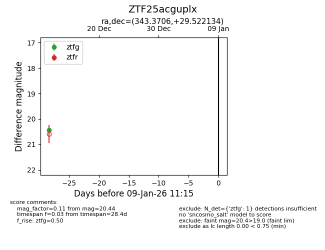
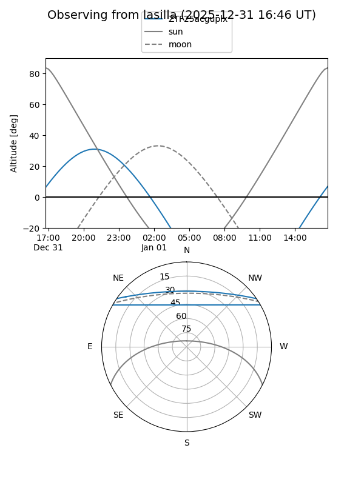
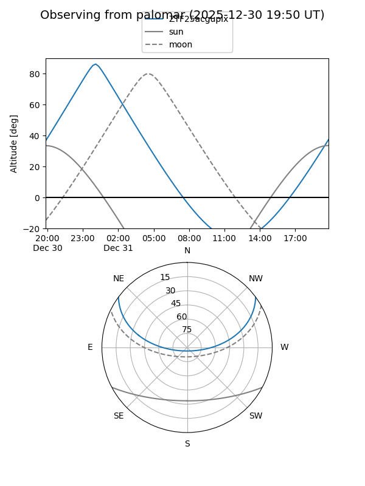

ZTF25acguplx
Target ZTF25acguplx at 2025-12-31 16:59
Aliases and brokers:
FINK:
Lasair:
ALeRCE:
alt names
ZTF25acguplx (ztf,fink_ztf)
Coordinates:
equatorial (ra, dec) = 343.3706,+29.52213
equatorial (HMS+DMS) = 22:53:28.95,+29:31:19.68
galactic (l, b) = (94.2795,-26.70643)
Flags:
Photometry:
last ztfg=20.44
1 ztfg detections
Lightcurve

Visibility


Additional plots